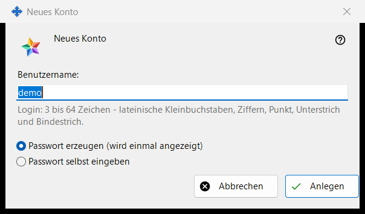
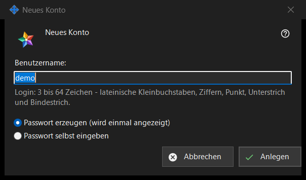

Neues Konto
Verwendungszweck
Ein Fenster in zwei Modi. «Neues Konto» fügt dem von Ihnen betriebenen Media Exchange Server ein Konto hinzu; «Passwort zurücksetzen: <login>» gibt einem vorhandenen Konto ein neues Passwort. Sie öffnen sich über «Konto hinzufügen..» und «Passwort zurücksetzen..» unter der Kontoliste auf der Seite Media Exchange Server der Einstellungen von Share Manager; für das Zurücksetzen muss ein Konto ausgewählt sein.


In dieser Reihenfolge
- Geben Sie im Modus Hinzufügen das Login ein.
- Wählen Sie, wie das Passwort erzeugt wird.
- Entscheiden Sie im Modus Zurücksetzen, ob alle Geräte des Kontos abgemeldet werden.
- Klicken Sie auf «Anlegen» oder «Zurücksetzen».
- Kopieren Sie das erzeugte Passwort aus dem nächsten Fenster oder geben Sie ein eigenes ein.
Die Elemente
Erklärung beim ersten Konto
Beim allerersten Konto beginnt das Fenster mit «Lesen Sie, bevor Sie das erste Konto anlegen, was der Betreiber des Servers sehen kann:» und einem schreibgeschützten Feld mit der Erklärung. Spätere Konten und das Zurücksetzen zeigen sie nicht.
Login
Nur im Modus Hinzufügen. 3 bis 64 Zeichen: lateinische Kleinbuchstaben, Ziffern, Punkt, Unterstrich und Bindestrich; Großbuchstaben werden in Kleinbuchstaben umgewandelt. Der Hinweis wechselt zur Warnfarbe, solange der Text kein Login sein kann, und «Anlegen» geht nicht weiter, bis er eines sein kann.
Wie das Passwort erzeugt wird
«Passwort erzeugen (wird einmal angezeigt)» ist die Vorgabe: Das Programm erzeugt ein zufälliges Passwort, das die Regeln erfüllt, und das nächste Fenster zeigt es ein einziges Mal. «Passwort selbst eingeben» öffnet das Fenster «Kontopasswort», in dem eine Live-Zeile nennt, was fehlt: mindestens 10 Zeichen mit einem lateinischen Groß- und einem Kleinbuchstaben und einer Ziffer.
Alle Geräte abmelden
Nur im Modus Zurücksetzen. «Auch sofort alle Geräte dieses Kontos abmelden» ist standardmäßig angehakt. Die Ergebniszeile meldet dann, dass das Passwort geändert und alle Geräte des Kontos abgemeldet sind; ohne Haken meldet sie nur, dass das Passwort geändert ist.
Nach der Annahme durch den Server
Die Ergebniszeile meldet, dass das Konto angelegt ist. Ein erzeugtes Passwort erscheint einmal in einem eigenen Fenster mit «Passwort kopieren» und «Eigenes Passwort festlegen..», das zum Zurücksetzen mit der Auswahl «Passwort selbst eingeben» zurückführt. Ist «Kontopasswörter auf diesem PC speichern» eingeschaltet, wird das Passwort auch auf diesem PC gespeichert und das Konto erhält «Passwort anzeigen..». Bietet dieser Build die Austausch-Clientfunktionen an und hat dieser PC kein eigenes Konto, wird er mit diesem Passwort als erstes Gerät des Kontos angemeldet.
Managereinstellungen · SFTP-Freigabeeinstellungen · Einstellungen des Austauschservers